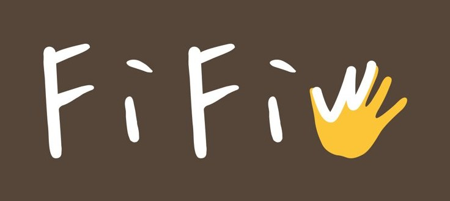
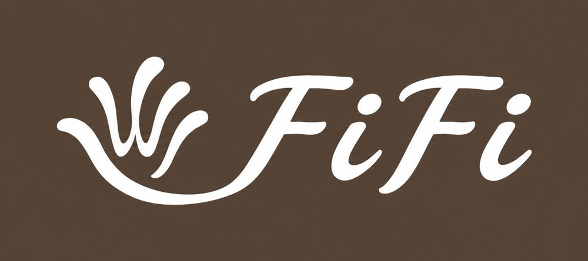

FiFi.Stitch｜手作布包
← 回首頁
2017 2026
我的手作小天地
FiFi.Stitch 是我的手作小角落。2017 年車縫上第一枚 FiFiW 布標，從一個個紅包袋開始，慢慢做出筆袋、化妝包、斜背包，這幾年也開始學皮革，從打紙型、裁皮，一路做到完成一只包。
我喜歡的暗藏故事的表布，打開掀蓋或拉鍊後是另一塊花布，這是我留給使用者的小驚喜。
跟著2026 年的新布標，繼續一針一線創作生活。


FiFi.Stitch 是我的手作小角落。2017 年車縫上第一枚 FiFiW 布標，從一個個紅包袋開始，慢慢做出筆袋、化妝包、斜背包，這幾年也開始學皮革，從打紙型、裁皮，一路做到完成一只包。
我喜歡的暗藏故事的表布，打開掀蓋或拉鍊後是另一塊花布，這是我留給使用者的小驚喜。
跟著2026 年的新布標，繼續一針一線創作生活。

